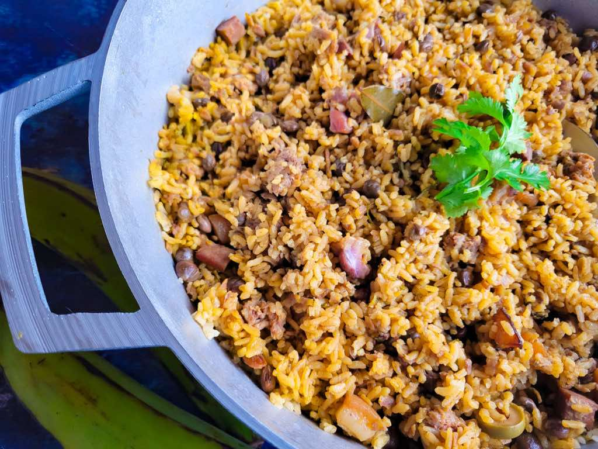

Home
Arroz Con Gandules

Ingredients
- 1/2 lb Pork Ribs, seasoned with adobo
- 4 1/2 cups Medium Grain Rice
- 4 1/2 cups Water
- 2 cans Gandules (pigeon peas)
- 1 cup Tomato Sauce
- 3/4 cup Sofrito
- 1 packet Sazon
- Onions, Garlic, and Olives, to taste
Directions
- Cut the ribs into chunks and season with adobo. Cook over medium heat until brown.
- Add onions, garlic, olives, sazon, and sofrito to the pot. Cook until fragrant and
the onions have softened slightly.
- Add water, sauce, red peppers, and gandules. Salt as necessary, but be cautious as the
sazon is fairly salty in itself.
- Cover and simmer for 45 minutes.
- Stir in the rice and cook until water evaporates. Then cover and cook over low-medium
heat for 25 minutes.
- Uncover, fluff with a fork, and serve